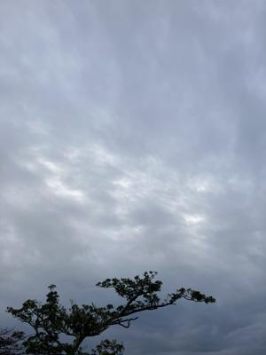

うるがいの話 ある日
最新: 月桃【うるがいの話 ある日】とは 一日だけのプログです
『うるがいの話』の最新一日だけのプログで、通信料が少なく経済的だ。カニの画像をクリックすると全ての日付が載る『うるがいの話』サイトを表示します
|
|
【うるがいの話】 うるがい(ｳﾙｶﾞｲ urugai)とは、『もずくがに』の名前でとても大きくなります。 |
|---|---|
|
|
【カミマヤーの話】 猫のことを方言でマヤーといいます。カミマヤー（kamimayaa）とは、神の猫のことです。 |
|
【たながぁの音楽】 たながぁ（ﾀﾅｶﾞｰ tanagaa）とは手長えびのことで、何種類かあり大きいのは車 エビぐらいになります。 |

|
【ぶながぁの話】 ぶながぁ(ﾌﾞﾅｶﾞｰ bunagaa)とは、赤い髪の毛、赤い身体、そして身長は１ｍ２０ｃｍ ぐらい、川の蟹を食べているの目撃された。場所は沖縄県国頭郡大宜味村のと ある村僕の隣近所に住んでいる爺さんから、聞いた話です。 |
|
|
【ギーマの話】 ギーマ(giima)とは、山原の里山に咲くスズランに似た、 花を付けます。実は食べられます、 気が付くと口の周りが紫になっています。 |
2026年02月21日 (土）月桃
17:19

月桃のユーチューブ動画が、完成しました。１月２６日に思い立
ってから、ほぼ一か月かかりました。今回は、演奏した後に画像
を追加しました。ところが、アップした後に画像が表示される時
間が、４秒と短すぎるので、やむなく２７秒に再アップしました
。スゴイですね、再アップする２時間近くで視聴回数が、４０回
ほどになっていました。

月桃 本調子 三線(sanshin) 工工四 ４分２８秒
https://youtu.be/vA3D9XXHaxQ
歌詞が６番まであるので、多くの楽器を使いバリュエーションを
展開しました。ア、画像は演奏の４分後に首里高校の事を書いて
あります。
今日は、天気が良く、暖かくなりました。ウォーキングに行きま
したが、私の唯一楽しみはなくなってしまいました。